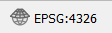
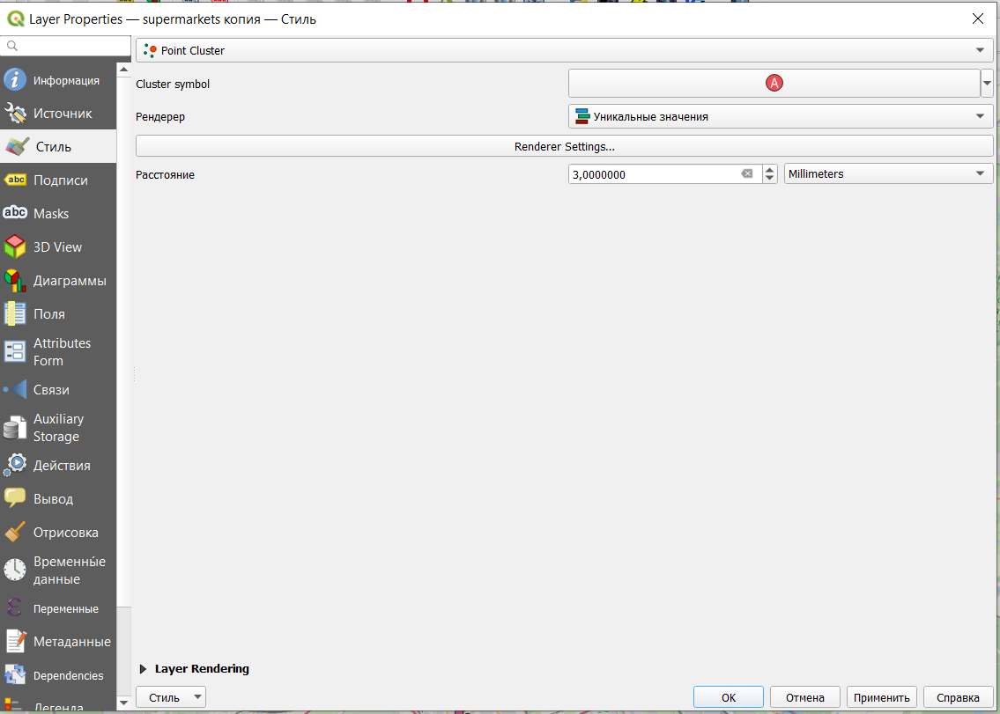
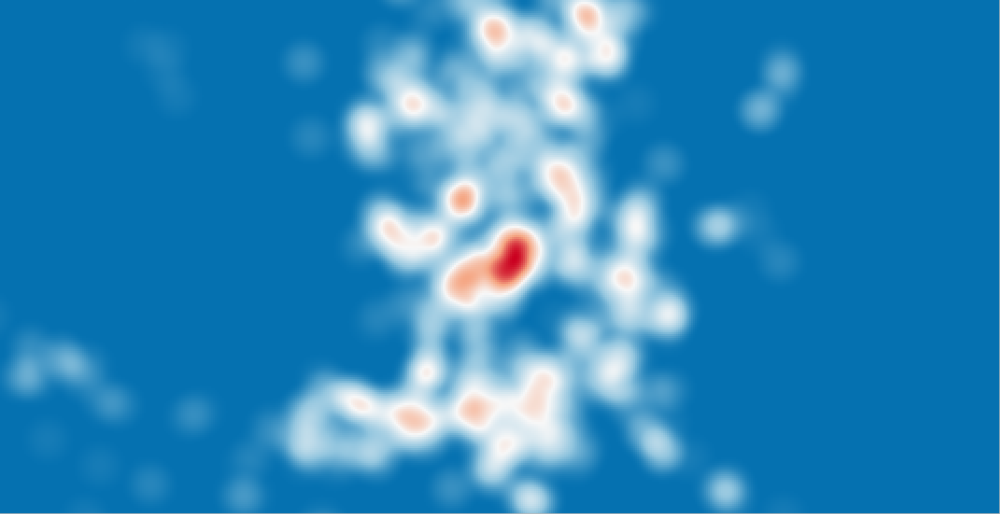
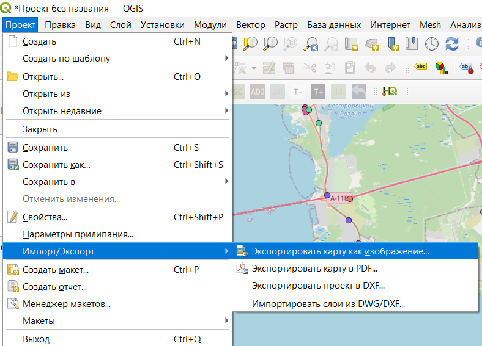
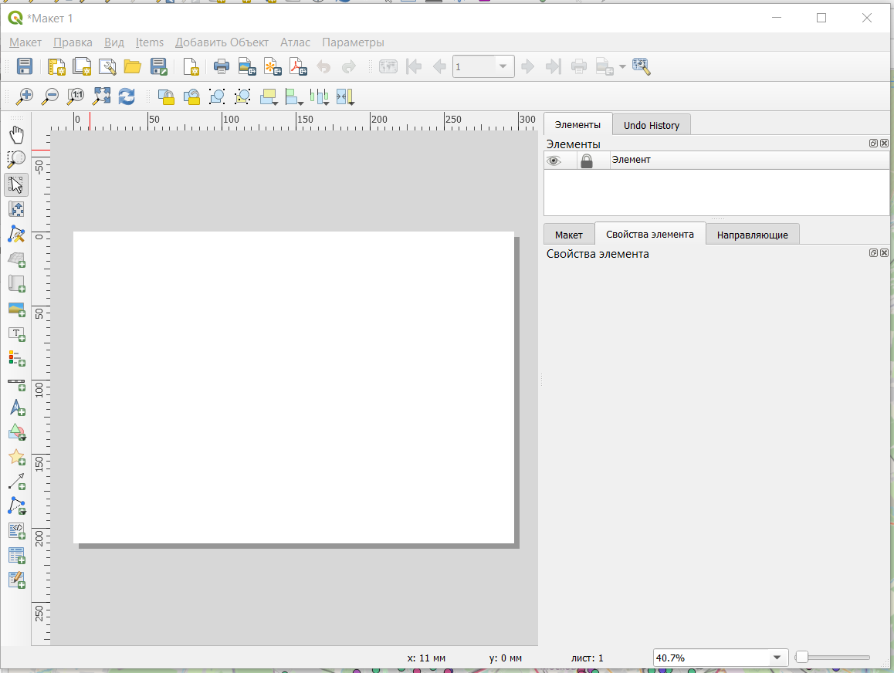

3 Начало работы
3.1 Добавление объектов на карту
В качестве первой работы построим и оформим карту супермаркетов в городе Санкт-Петербург.
Исходные данные для работы можно скачать по ссылке здесь
Исходные данные были взяты с OpenStreetMap и сохранены в виде таблицы со следующими столбцами:
brand - название сети супермакетов;
lat - широта, градусы;
lon - долгота, градусы.
Для начала работы нужно запустить программу QGIS. После первого запуска вы увидите графический пользовательский интерфейс.

В верхней части окна расположена строка меню и панель инструментов, в левой части сверху окно Браузер, в котором отображаются все доступные источники данных для работы, в левой нижней части окно Слои, где будут отображаться слои, загруженные в проект.
Проект - совокупность всех слоев, стилей, макетов и прочего. Проекты позволяют сохранить конкретный сеанс работы.
Для того, чтобы добавить данные на карту воспользуемся строкой меню: Слой — Добавить слой — Добавить слой из текста с разделителями.

После этого в диалоговом окне нужно задать параметры добавления объектов: имя слоя, вид разделителя, названия атрибутов, координаты точек, систему координат и прочее.

В нашем случае в качестве координат точек выступают колонки lat, lon, а система координат необходима EPSG:4326 - WGS 84 (про системы координат в ГИС есть отдельный раздел 4).
После добавления на карте должны появиться точки объектов

3.2 Добавление подложки
Для более понятной карты добавим на карту подложку OpenStreetMap. Это можно сделать двумя способами: через панель Браузер и с помощью плагина QuickMapServices.
Для того, чтобы добавить подложку из панели Браузер достаточно просто найти в ней XYZTiles, щелкнуть два раза, после чего раскроется список доступных тайлов (по умолчанию доступны только стандартные тайлы OpenStreetMap).

Тайлы или тайловые карты - это карта, отображаемая в веб-браузере путем бесшовного соединения десятков индивидуально запрашиваемых файлов изображений или векторных данных.
Google Maps был одним из первых крупных картографических сайтов, использовавших эту технику. В первых плиточных веб-картах использовались растровые плитки, до появления векторных плиток.
Возможно нужно будет перетащить в перечне слоев подложку под слой с супермаркетами, чтобы она не перекрывала наши точки.
По умолчанию слои отрисовываются в том порядке, в котором они расположены в перечне слоев. То есть слои, находящиеся в списке выше, будут отображаться поверх других слоев
Чтобы добавить подложку через плагин QuickMapServices нужно сначала его установить. Установка плагинов осуществляется через строку меню: Модули — Управление и установка модулей.
В открывшемся окне через строку поиска нужно будет найти модуль по его названию и установить.

После установки на панели инструментов появятся 3 значка  .
.
Далее можно добавить стандартную подложку OpenStreetMap

Установленный плагин позволяет добавлять не только стандартную подложку OSM, но и целый ряд других.
3.3 Настройка карты
Глядя на нашу карту, мы заметим, что изображение выглядит непривычным для нас, как бы наклоненным. Это объясняется немного непривычной системой координат, в которой у нас создан проект и слой. Для изменения отображения карты, мы можем выполнить “перепроецирование на лету”.
Для того, чтобы это сделать, необходимо в правом нижнем углу окна программы найти кнопку 
После ее нажатия открывается диалоговое окно с настройками системы координат

Для того, чтобы сделать карту более привычной нам на вид выберем систему координат EPSG:3857 - WGS 84 / Pseudo Mercator. После изменения системы координат изображение должно “выровняться”.

Важно помнить, что перепроецировании на лету не изменяются системы координат слоев, меняется только их отображение на экране.
3.3.1 Настройка стиля
Настроим стиль слоя. Для этого нужно открыть окно настроек либо двойным кликом левой кнопки мыши по названию слоя, либо в контекстном меню (открывается кликом правой кнопки мыши по названию слоя) Свойства.

При добавлении объектов они обозначаются простыми символами (Обычный знак), но возможен выбор других вариантов отображения объектов.

уникальные значения - как правило, используется для категориальной или дискретной переменной с небольшим количеством значений;
градуированный знак - для задания символа в зависимости от числовой переменной, также позволяет использовать выражения;
правила - позволяет задавать символику на основе выражения;
смещение точек - позволяет показать все точки слоя, даже если они находятся в одном месте, возможны варианты смещения по кругу, концетрическим кругам и сетке;
point cluster - собирает близко расположенные точечные объекты в один;
создание теплокарт - создает динамическую карту плотности распределения объектов.
Для линейных и площадных объектов будут немного другие варианты, которые будут рассмотрены далее в курсе.
3.3.1.1 Простые символы
В нашем датасете есть фактически всего один атрибут, по которому мы можем настроить стиль символов - brand. Так как это категориальная переменная, следует использовать тип символа Уникальные значения. После выбора типа символа нужно выбрать Значение (атрибут, по которому будет задаваться символ) и нажать кнопку Классифицировать. После этого будет осуществлена автоматическая классификация по заданному атрибуту и отобразиться легенда слоя.

При необходимости далее можно
- нужную палитру или создать свою
- настроить символ - выбрать его размер, прозрачность, вращение, вид символа
- объединить или разъединить категории
- поменять название, под которым категория будет отображаться в легенде, для чего нужно дважды щелкнуть мышкой в конкретной категории в графе Легенда и ввести нужное название
Кроме того, можно изменять цвет и вид символа для отдельных категорий. Для этого достаточно дважды щелкнуть мышкой напротив символа конкретной категории.
После настройки стиля слоя под его названием появляется легенда, с помощью которой можно делать отдельные категории невидимыми (для этого достаточно убрать галочку в чекбоксе напротив названия категории).

Задание: самостоятельно настроить цвет и вид символов на карте по своему усмотрению
3.3.1.2 Кластеры
Для того, чтобы не перегружать карту объектами, можно настроить стиль точечного слоя в виде кластеров. В этом случае близко расположенные точки будут собираться в группы-кластеры.
Продублируем наш исходный слой

После этого отключим видимость ранее исходного слоя и включим слой дубликат (видимость слоев включается и отключается простановкой галочки в чекбоксе).
Для настройки стиля откроем свойства слоя дубликата и выберем тип знака Point cluster.

Здесь можно настроить символ кластера, рендерер и расстояние, на котором объекты будут группироваться друг с другом. При этом кластеры будут динамически пересчитываться при увеличении и уменьшении масштаба карты.
Рендерер в данном случае - это тоже настройка символа кластера, похожая на настройку простых точечных символов.
В нашем случае рендерер унаследовал настройку по уникальным значениям от простого символа, но при необходимости можно дополнительно что-то скорректировать в Renderer settings.
Настройка символа происходит аналогично настройке простого маркера.

В результате будет получена подобная карта.
3.3.1.3 Тепловая карта
Еще раз продублируем слой, чтобы рассмотреть создание тепловой карты.
Откроем настройки продублированного слоя и выберем стиль Создание теплокарт.
Вы можете задать радиус тепловой карты в миллиметрах, точках, пикселях, единицах карты или дюймах, выбрать и отредактировать цветовую рампу для стиля тепловой карты и использовать ползунок для выбора компромисса между скоростью и качеством рендеринга. Вы также можете определить предел максимального значения и придать вес точкам с помощью поля или выражения. При добавлении или удалении объекта рендерер тепловой карты автоматически обновляет стиль тепловой карты.
Главный недостаток тепловых карт в том, что они не дают четких значений плотности объектов, поэтому подходят только для отображения общих паттернов.
Задание: подобрать подходящий градиент и настроить тепловую карту.
В результате создания тепловой карты должен быть получен подобный результат.


3.4 Оформление карты
3.4.1 Создание макета
Просто сохранить карту в виде изображения можно через строку меню Проект — Импорт/Экспорт — Экспортировать карту как изображение (Экспортировать карту в PDF).

В открывшемся окне можно настроить масштаб, охват карты, разрешение, аннотации и прочее. Но такой метод не позволяет сделать некоторые точные настройки экспорта.

Некоторые настройки оформления можно добавить через пункт меню Вид — Оформление.

Более предпочтительным методом публикации являются макеты, которые сохраняются как часть проекта и позволяют кастомизировать результат публикации. Создание макета происходит через строку меню Проект — Создать макет.

После создания макета открывается отдельное окно, в котором происходит настройка карты для публикации.

По левому краю расположены значки добавления различных элементов оформления на макет, в правой части окна сверху будут перечислены добавленные на макет элементы, а в правой нижней части окна будут отображаться свойства элементов. В центральной части расположен лист, на котором будет размещаться карта и добавленные на нее элементы.
3.4.2 Настройка макета
3.4.3 Параметры листа
Чтобы настроить размер и ориентацию листа, нужно открыть его параметры. Параметры листа открываются в контекстном меню, которое появляется после нажатия правой кнопкой мыши на лист.

После этого в правой части окна появятся настройки параметров листа.

Добавить новый лист в макет можно кнопкой Добавить листы.
3.4.4 Добавление карты
Добавление карты на лист осуществляется инструментом Добавить Карта на левой панели окна макета 
После выбора этого инструмента нужно щеклнуть на любом месте листа, чтобы карта была добавлена. После этого открывается диалоговое окно, в котором можно настроить положение и размер элемента (не обязательно, так как это положение и размер можно скорректировать вручную уже на листе после добавления).

После добавления карта должна появиться на листе, а в правой части окна появятся ее настройки.
Изменить размер элемента можно просто потянув за один из белых квадратиков по периметру элемента. При этом можно увидеть, что сразу меняется масштаб и границы карты.

На добавленной карте отображаются те слои, которые в данный момент являются видимыми в основном окне программы.
Основные настройки элемента:
масштаб - рассчитывается в зависимости от того, какая область попадает в элемент, при необходимости может быть введен нужный знаменатель масштаба;
вращение - карту можно развернуть на листе под любым углом;
система координат - система координат, в которой карта отображается на макете, по умолчанию система координат проекта;
заблокировать слои - так как на карте отображаются видимые в конкретный момент времени слои, то она будет обновляться и меняться после включения/отключения/добавления новых слоев, поэтому можно выбрать нужные для отображения слои, сделать их видимыми в основном окне, потом заблокировать слои на макете и содержание карты больше не будет меняться; при необходимости блокировку можно снять;
границы помогают задать охват карты.
3.4.5 Масштабная линейка
Для отображения масштаба карты на нее нужно добавить масштабную линейку (линейный масштаб) с помощью инструмента Добавить Масштабная линейка 
Процесс добавлени происходит аналогично добавлению карты на лист.
Основные настройки масштабной линейки:
карта - то, для какого элемента карты добавляется линейка (в нашем случае всего один элемент карты, если их несколько можно сделать выбор);
стиль линейки
единицы масштабной линейки - единицы измерения на линейном масштабе;
множитель единиц масштабной линейки - во сколько раз уменьшить значения на масштабной линейке;
подпись единиц измерения;
number format - формат чисел на линейном масштабе;
сегменты - количество сегментов слева от нуля и справа от нуля;
фиксированная ширина - размер сегмента в единицах измерения карты;
зафиксировать длину сегмента - размер сегментов линейного масштаба в единицах измерения листа.
3.4.6 Легенда
Добавим на карту легенду, с помощью кнопки Добавить Легенда  .
.

По умолчанию на легенду добавляются все слои, которые есть в вашем проекте. Чтобы в легенде отображались только видимые слои, нужно поставить галочку в чекбоксе Only show items inside linked map.
Названия слоев и категорий в легенде отображаются также, как и в основном окне программы, поэтому, чтобы кастомизировать содержание легенды, нужно убрать галочку напротив функции Auto update и после этого осуществить необходимые настройки.
Задание: сделать макет из трех листов, на одном из которых будет карта магазинов в виде простых символов, на втором - карта кластеров, на третьем - тепловая карта.